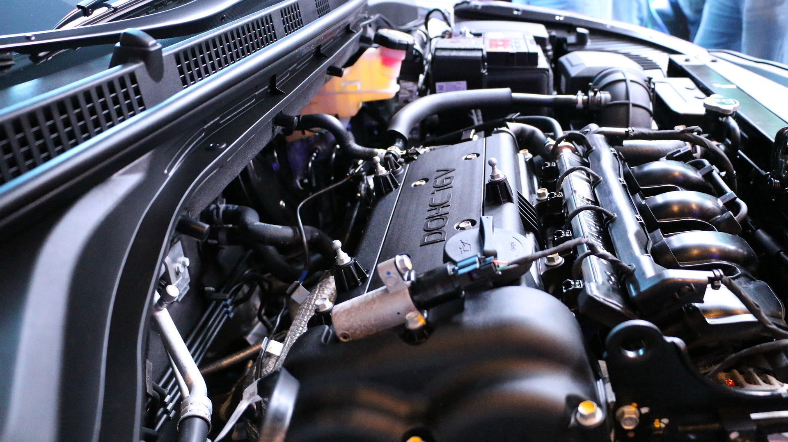

As the car lovers we are, this website was created to introduce people to this whole world of cars and show them why we get so excited when we hear the sound of a starting engine. If you want to know more about cars or take your first steps inside this world, we are pleased to welcome yo to your home, were we are going to explain you this world and its wonders.
The first steps...
The world's first car with an internal combustion engine is the Benz Patent-Motorwagen, built by Carl Benz in 1885 and patented on January 29, 1886. It was a gasoline-powered tricycle, considered the first vehicle specifically designed to be powered by an engine, marking the beginning of the automotive era.

Almost a century and a half later
Who would had thought that the tricycle of Carl Benz started one of the most important movements in the entire world, leading to the creation of absolute beasts of speed and marvels of engineering. Lets review some of the most legendary cars human hands have creates.
Hypercars
koenigsegg Jesko Absolut
This is one of the world's most extreme and fastest production hypercars, designed specifically to break top speed records. Only 125 units were manufactured globally, with a base price of around US$3 million that exceeds US$3.5 million with customizations. It accelerates from 0 to 100 km/h in approximately 2.5 to 2.79 seconds, an absolute madness of speed.
specs
- Engine:5.0-liter twin-turbo V8.
- Power: delivers 1,600 hp using E85 biofuel.
- Top speed: Estimated at 532km/h (Theorical).
- Transmission: 9-speed Light Speed Transmission (LST).
Bugatti Chiron
The Bugatti Chiron is one of the most exclusive and powerful hypercars in the world. Equipped with an 8-liter, quad-turbocharged W16 engine, it can accelerate from 0 to 100 km/h in just 2.4 seconds. Its base price ranges from €2.4 to €3 million, reaching up to $5 million for special editions.
specs
- Engine: W16, 8.0 liters with 4 turbos.
- Power: 1,600 horsepower (hp) when running on E85 fuel. If conventional gasoline is used, the engine produces 1,280 hp.
- Top speed: Limited to 420 km/h, with variants like the Super Sport 300+ exceeding 490 km/h.
- Transmission: 7-speed dual-clutch automatic transmission (DSG).
Hennessey Venom F5
The Hennessey Venom F5 is an American hypercar designed from the ground up by Hennessey Special Vehicles. Equipped with a 6.6-liter twin-turbo V8 engine nicknamed "Fury," it generates an astonishing 1,817 hp (or up to 2,031 hp in extreme versions). It is designed to break the 480 km/h barrier and Its price ranges from $2.1 million to $3.1 million, depending on the version and level of customization.
specs
- Engine: 6.6-liter twin-turbo V8 "Fury".
- Power: 1817 hp in the base model; the Revolution Evo version reaches up to 2031 hp.
- Top speed: Designed to reach and exceed 500 km/h.
- Transmission: Sequential manual shifts or a 6-speed manual transmission.
Technical corner
Engine
It is a mechanical system made up of several parts such as cylinders, pistons, valves, crankshaft, camshaft and fuel and cooling systems (we will talk about this terms in another oportunitie). Its function is to transform the chemical energy of the fuel into mechanical energy to produce motion.

Internal combustion engine
This is a type of engine where fuel and air are mixed and burned inside a chamber called a cylinder. During combustion, an explosion occurs that pushes the pistons; these transmit the motion to the crankshaft, converting linear motion into rotary motion that ultimately drives the wheels.
5.0-liter twin-turbo V8
This name describes the configuration of an engine:
- 5.0 liters: This refers to the total displacement or volume of the cylinders; it is the sum of the space traveled by the pistons.
- Twin-turbo: This engine has two turbochargers that use exhaust gases to spin a turbine, which compresses the air entering the engine, increasing the amount of oxygen and improving power.
- V8: This engine has eight cylinders arranged in two banks of four cylinders, forming a "V," which helps balance performance and size.
Carl Benz
He was a German engineer and inventor considered one of the pioneers of the automotive industry. He designed one of the first functional automobiles powered by an internal combustion engine and contributed to the development of mechanical components that are still used as a basis in modern vehicles.
Horsepower
It's a measure that indicates an engine's power. The more horsepower a car has, the greater its ability to accelerate and reach higher speeds. The term was coined by the Scottish engineer James Watt in the 18th century, who used it to compare the working capacity of his steam engines with that of the draft horses of the time.
Hypercar
A hypercar is the highest and most exclusive category in the automotive world, surpassing even supercars. These vehicles represent the absolute limits of automotive technology, performance, and engineering at a given moment, considered by many to be the purest and most radical expression of what a car can be.
Unlike a conventional car—or even a supercar—a hypercar isn't born to satisfy transportation needs or offer everyday comfort. It's born to break barriers: to shatter speed records, defy the laws of physics, and demonstrate that human engineering has no apparent limits. Every component, from the chassis to the smallest screw, is designed and optimized with an almost obsessive focus on performance.